Details
What information helps Aero respond with a useful answer instead of a generic reply.
Contact / 01
Contact opens as a clear aviation decision hub: what Aero offers, who it helps, why it matters, and which route to take first.
The first screen combines positioning, proof, primary action, and fast internal navigation, so people can act immediately or compare the rest of the contact route with context.
Aerospace velocity hero
Select the closest route and Aero keeps the next step, proof, and follow-up expectation aligned with safety and premium reliability.
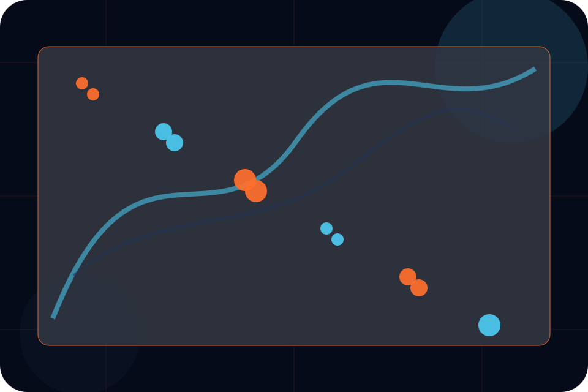
Contact / 02
Charter makes the contact path concrete: what to send, how the response works, and what Aero needs before visitors request a charter.
The section reduces contact friction by naming the channel, expected detail, privacy path, and response expectation instead of dropping visitors into a generic form.
Request CharterWhat information helps Aero respond with a useful answer instead of a generic reply.
How the visitor should think about response, urgency, location, or availability.
The expected next message keeps scope, timing, and the first practical step clear.
Contact / 03
Technical makes the contact path concrete: what to send, how the response works, and what Aero needs before visitors request a charter.
The section reduces contact friction by naming the channel, expected detail, privacy path, and response expectation instead of dropping visitors into a generic form.
Request Charter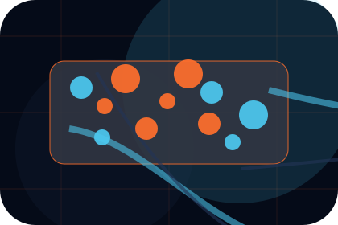
What information helps Aero respond with a useful answer instead of a generic reply.
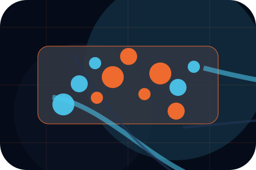
How the visitor should think about response, urgency, location, or availability.
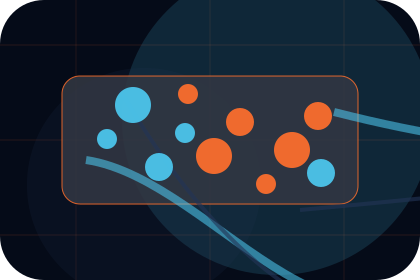
The expected next message keeps scope, timing, and the first practical step clear.
Contact / 04
Partners gives the proof layer for contact: standards, evidence, and reassurance that make the next decision feel grounded.
Instead of relying on vague claims, Aero presents visible standards, process cues, and proof artifacts that help aviation visitors judge fit.
Request CharterVisible proof that helps visitors believe the claims behind partners.
The quality, safety, or operating expectation this section makes explicit.
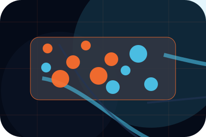
What becomes clearer before someone decides whether to request a charter.
Contact / 05
Details makes the contact path concrete: what to send, how the response works, and what Aero needs before visitors request a charter.
The section reduces contact friction by naming the channel, expected detail, privacy path, and response expectation instead of dropping visitors into a generic form.
Request CharterWhat information helps Aero respond with a useful answer instead of a generic reply.
How the visitor should think about response, urgency, location, or availability.
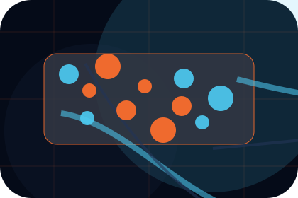
The expected next message keeps scope, timing, and the first practical step clear.
Contact / 06
Route makes the contact path concrete: what to send, how the response works, and what Aero needs before visitors request a charter.
The section reduces contact friction by naming the channel, expected detail, privacy path, and response expectation instead of dropping visitors into a generic form.
Request CharterAero keeps route practical: send the key details, choose the right contact route, and know what kind of reply to expect.
Request CharterContact / 07
Phone makes the contact path concrete: what to send, how the response works, and what Aero needs before visitors request a charter.
The section reduces contact friction by naming the channel, expected detail, privacy path, and response expectation instead of dropping visitors into a generic form.
Request CharterWhat information helps Aero respond with a useful answer instead of a generic reply.
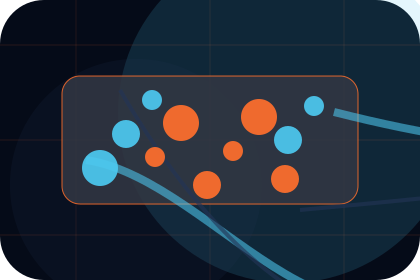
How the visitor should think about response, urgency, location, or availability.
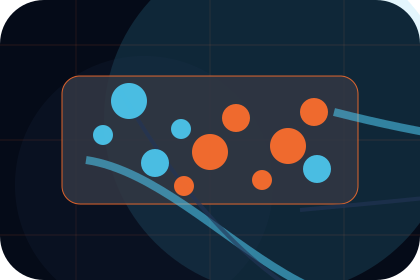
The expected next message keeps scope, timing, and the first practical step clear.
Contact / 08
Response makes the contact path concrete: what to send, how the response works, and what Aero needs before visitors request a charter.
The section reduces contact friction by naming the channel, expected detail, privacy path, and response expectation instead of dropping visitors into a generic form.
Request CharterWhat information helps Aero respond with a useful answer instead of a generic reply.
Contact / 09
Submit makes the contact path concrete: what to send, how the response works, and what Aero needs before visitors request a charter.
The section reduces contact friction by naming the channel, expected detail, privacy path, and response expectation instead of dropping visitors into a generic form.
Request CharterWhat information helps Aero respond with a useful answer instead of a generic reply.
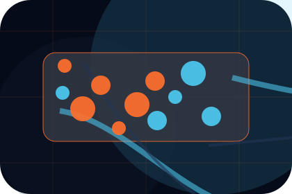
How the visitor should think about response, urgency, location, or availability.
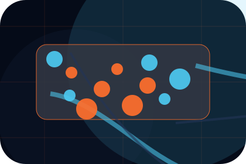
The expected next message keeps scope, timing, and the first practical step clear.
Contact / 10
Aero closes the contact route with a clear action, a quick reminder of the value, and a low-friction way to request a charter.
Visitors who are ready can use the primary action. Visitors who are still comparing can scan the section links, proof, and support routes before they request a charter.
Request CharterThe final block keeps the choice simple: act now, compare one more proof route, or send enough detail for a focused response.
Request Charter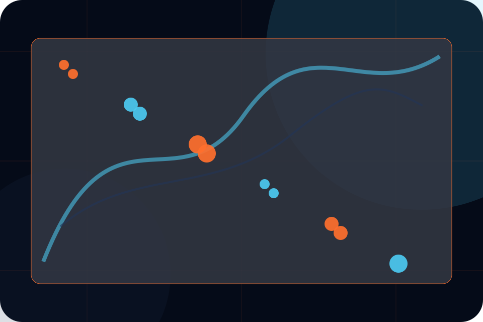
safety and premium reliability
An aviation site with speed-led hero, aircraft spec cards, route modules, safety proof, and charter enquiry. Contact ends with a direct path to request a charter, plus enough context for visitors who still need to compare.
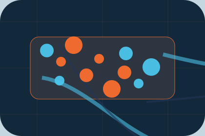
Request CharterInformation is provided for planning and should be reviewed for the final client, location, and operating rules.